Копирование контейнера закрытого ключа КриптоПро в реестр
В этой небольшой инструкции будет описано как скопировать ключ ("закрытую часть", так же "контейнер закрытого ключа" или "персональный ключ" - основной компонент квалифицированной подписи, без которого ничего не будет работать) в реестр компьютера.
Зачем это нужно?
Скопировав ключ в реестр можно будет работать с подписью не подключая к компьютеру флешку (или токен). Удобно, если у вас множество ключей для различных порталов или программ.
Важно отметить, что это в некотором смысле снижение уровня безопасности - лично я не рекомендую делать подобную настройку на местах, к которым есть публичный доступ. Так же настоятельно рекомендую установить пароль на вход в компьютер и настроить блокирование этим паролем заставки экрана.
Теперь, когда вы уверены в том, что хотите сделать, разберемся с тем как это, собственно, делается. :)
Поиск нужного контейнера и копирование
Разберемся какой ключ нам нужен
Если ключей много - например несколько лет подряд делали и получали ключи на одной флешке - будет не лишним разобраться какой именно из них сейчас действует.
Для этого зайдите в панель управления КриптоПро - нажмите кнопку Пуск и наберите в поиске КриптоПро
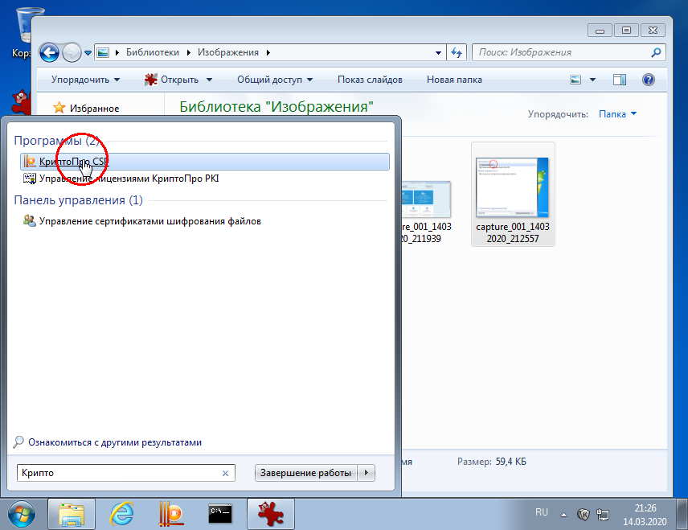
В панели управления на вкладке Сервис нажмите кнопку Просмотреть сертификаты в контейнере.
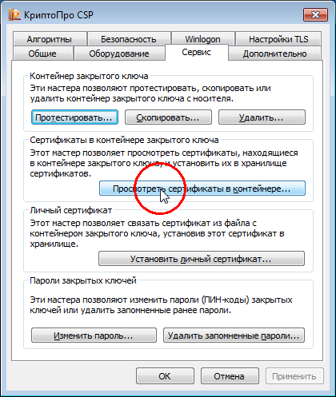
Кнопка Обзор покажет список всех подключенных контейнеров
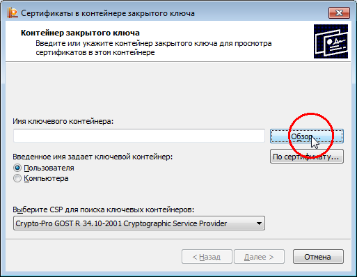
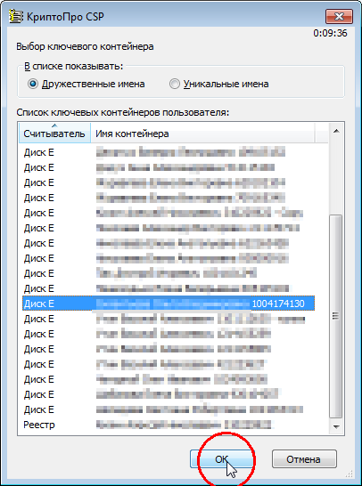
Выберите контейнер и нажмите кнопку Далее
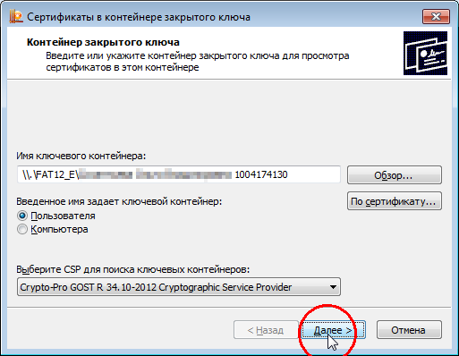
Обратите внимание: ключи, выданные Федеральным казначейством имеют определенный формат именования контейнеров. Для ключей физических лиц это ФИО и уникальный цифровой код контейнера (в этом примере - 1004174130). Для ключа юридического лица - либо краткое наименование организации и уникальный код, либо ОГРН организации и уникальный код.
Запишите себе этот код - по нему вы найдете нужный ключ при последующих операциях.
Последнее окно мастера покажет информацию о сертификате, установленном в данном контейнере. Обычно даты действия сертификата достаточно, но если нужна более подробная информация - например у вас несколько сертификатов физ. лица (как пример - отдельный для СУФД) - по кнопке Свойства откроется подробная информация о сертификате.
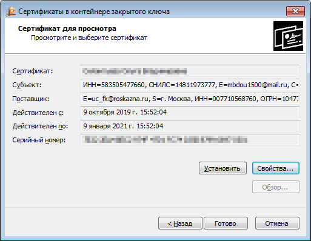
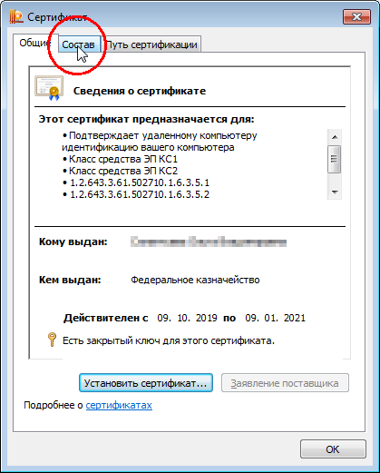
Первый способ может не сработать, если сертификат еще не устанавливался в контейнер - например вы только получили ключ.
В этом случае проверить соответствие ключа и сертификата можно по-другому.
Во вкладке Сервис панели управления КриптоПро нажмите кнопку Установить личный сертификат.
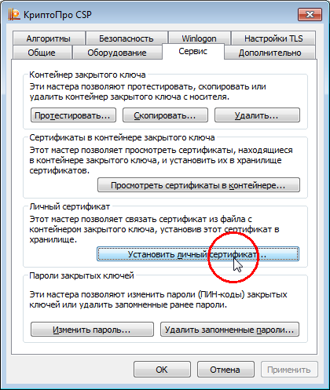
С помощью кнопки Обзор выберите файл сертификата и нажмите Далее.
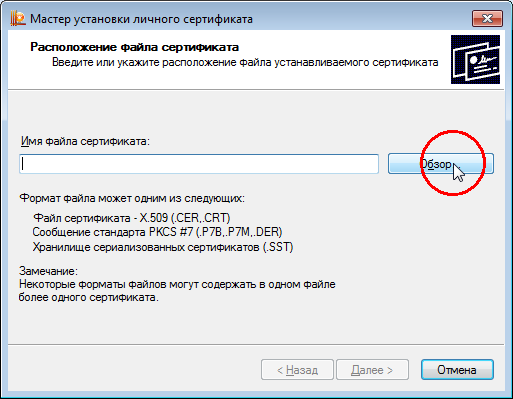
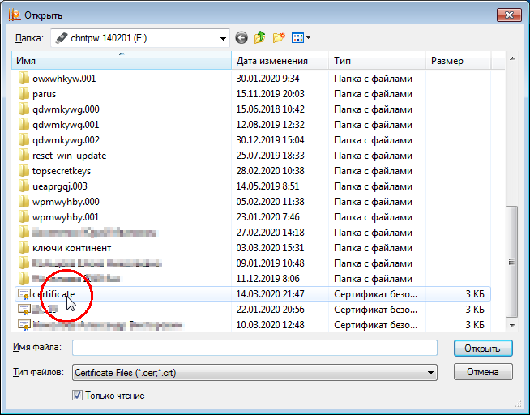
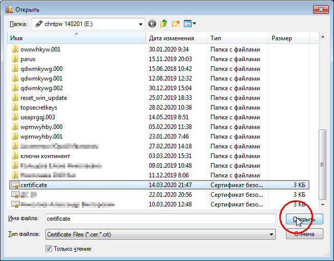
По дате действия можно убедиться что выбран правильный файл. Если все верно - нажмите кнопку Далее.
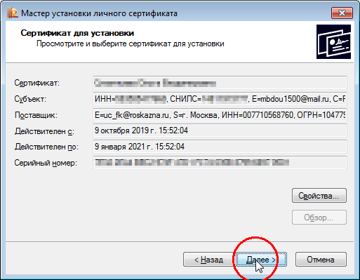
Установите галочку Найти контейнер автоматически. КриптоПро просканирует флешку и выберет подходящий к сертификату контейнер. Так же как и в первом способе зафиксируйте уникальный код контейнера.
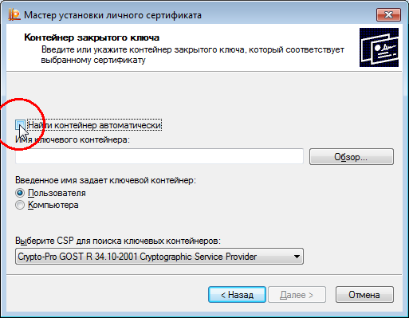

Установку сертификата можно не продолжать и нажать кнопку Отмена - позже мы вернемся к этому мастеру, когда будет готова копия ключа.
Копирование ключа
Теперь когда вы знаете какой ключ вам нужен, займемся копированием.
Все в той же вкладке Сервис нажмите кнопку Скопировать.
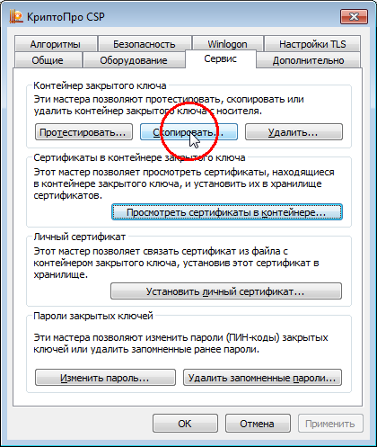
Нажав кнопку Обзор и вооружившись записанным ранее уникальным кодом контейнера выберите нужный ключ. Нажмите Далее.
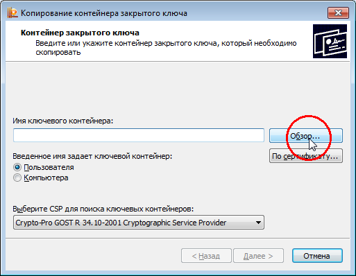
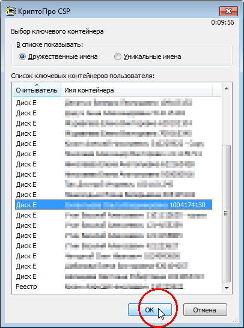
Введите пароль от ключа.
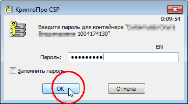
Это тот пароль, который вы придумывали при генерации ключа (когда оформляли заявление).
Далее мастер предложит задать имя новому контейнеру. Как правило того имени, которое он предлагает достаточно, но если у вас есть идеи как организовать свои копии вы можете воспользоваться этим функционалом.
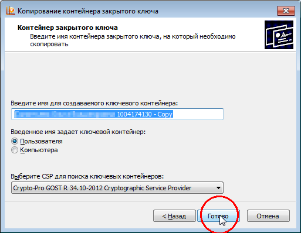
Для завершения копирования нажмите Готово.
Будет предложено выбрать носитель для нового контейнера. В нашем случае нужно выбрать устройство Реестр.
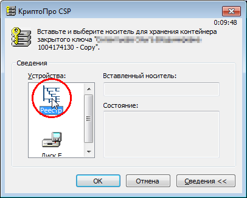
Теперь нужно задать пароль на копию - дважды ввести пароль. Можно ввести тот же пароль, который стоит и на оригинале, можно придумать новый.
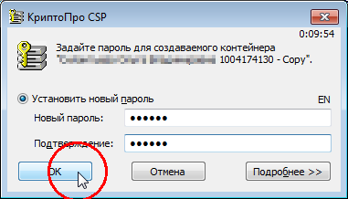
Программа оповестит вас об успешно созданном контейнере.
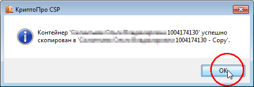
Таким же образом можно делать копии на рутокены или другие устройства, которые работают с КриптоПро
Или наоборот - если флешка сломалась, но вы работаете с реестром - сделайте копию из реестра на новую чистую флешку - так вы восстановите "оригинал".
Установка личного сертификата со ссылкой на копию контейнера
Последний шаг - установить сертификат так, чтобы он обращался к нужному ключу.
Для этого на вкладке Сервис панели управления КриптоПро нажмите Установить личный сертификат.
Кнопкой Обзор выберите файл сертификата и нажмите Далее два раза.
Вновь используя кнопку Обзор выберите новый контейнер - с " - Copy" в имени, или с тем именем, которое вы ему задали.
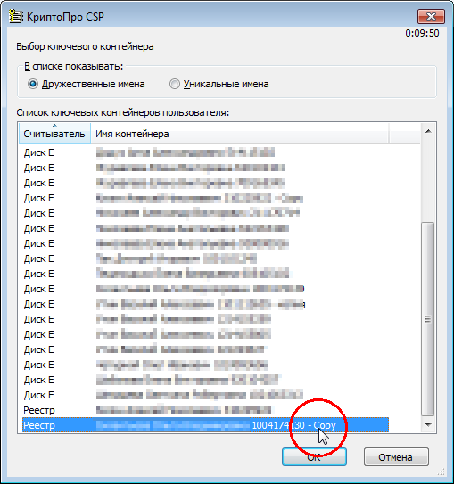
Дважды нажмите Далее, затем - Готово.
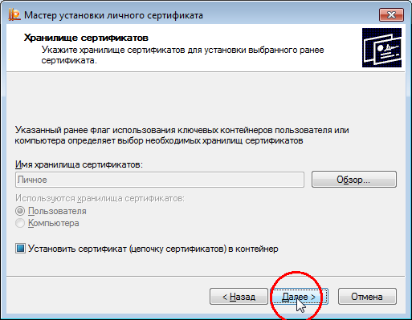
Спросит пароль - введите пароль от копии ключа.
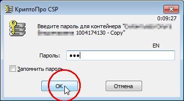
На этом все!
Проверить работоспособность можно зайдя на портал, для которого предназначен ключ, или подписав им документ - подпись будет работать вне зависимости от наличия флешки в компьютере.